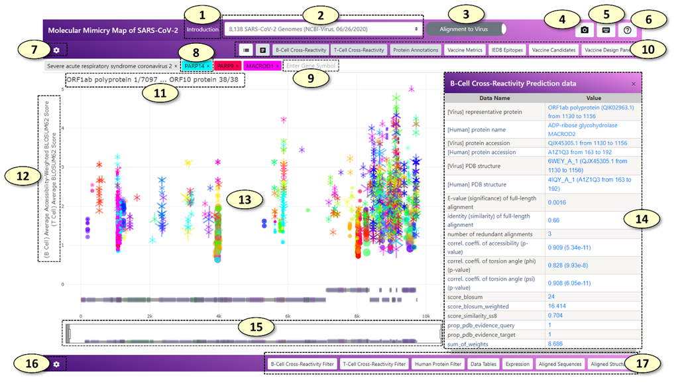
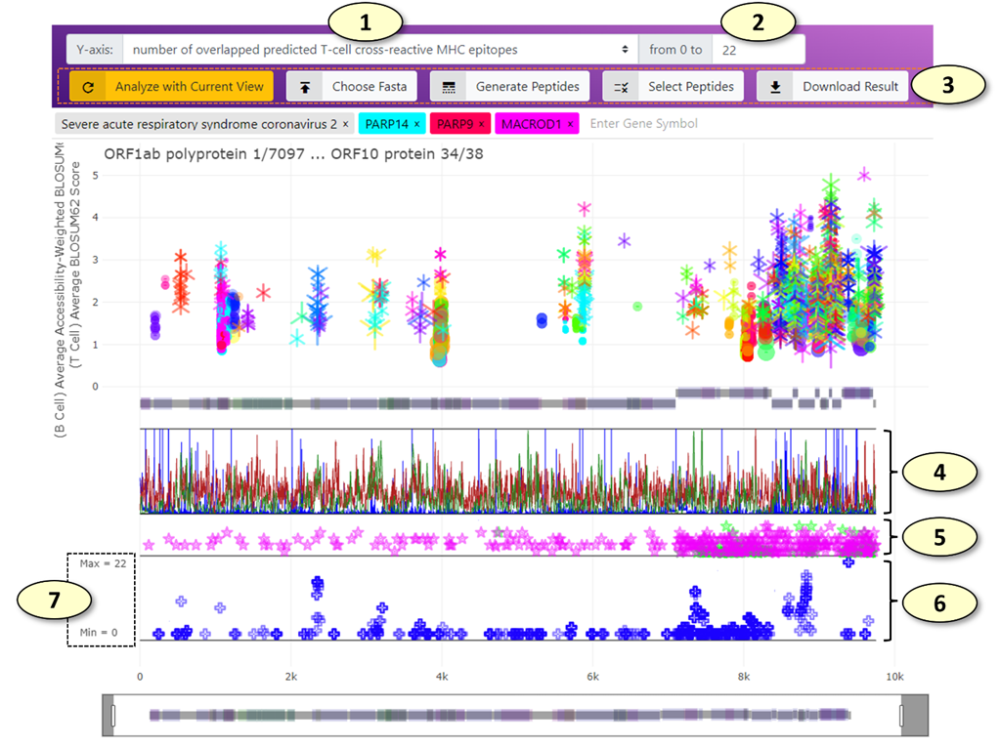
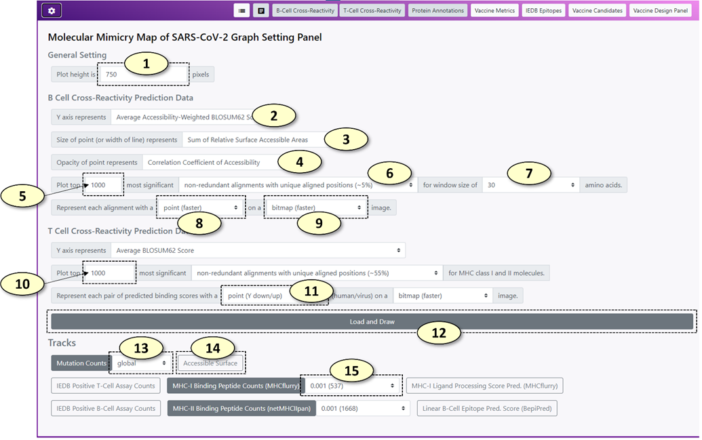
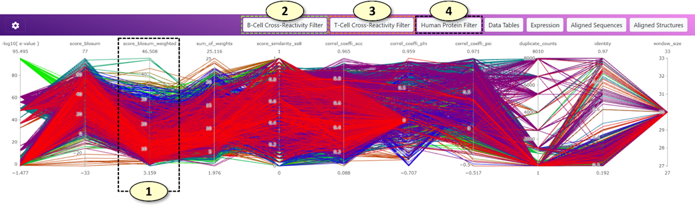
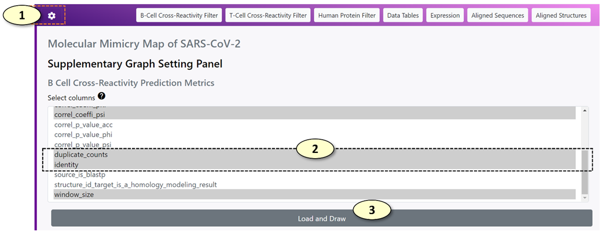
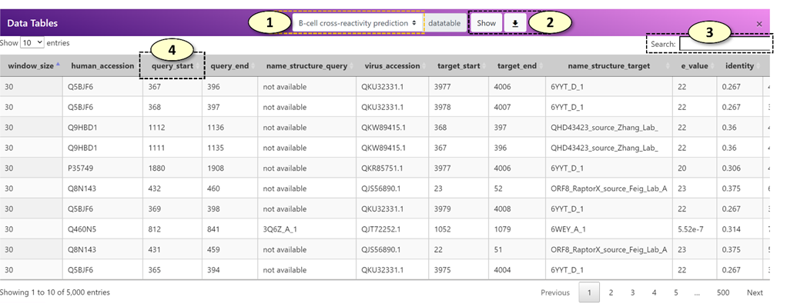
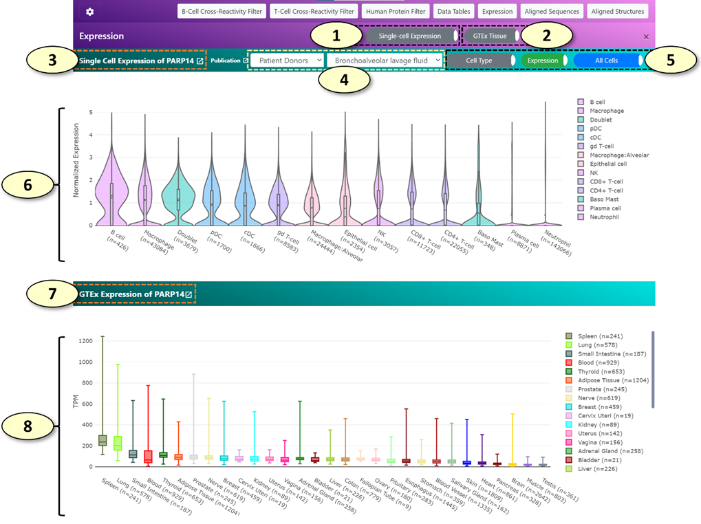
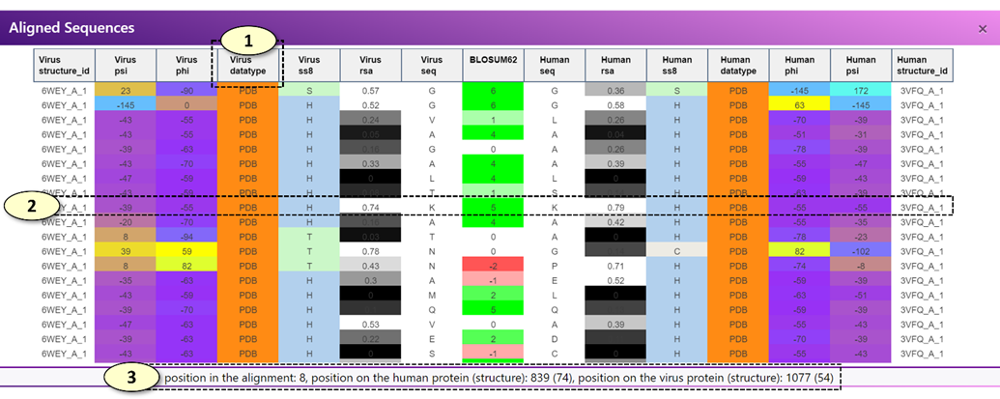
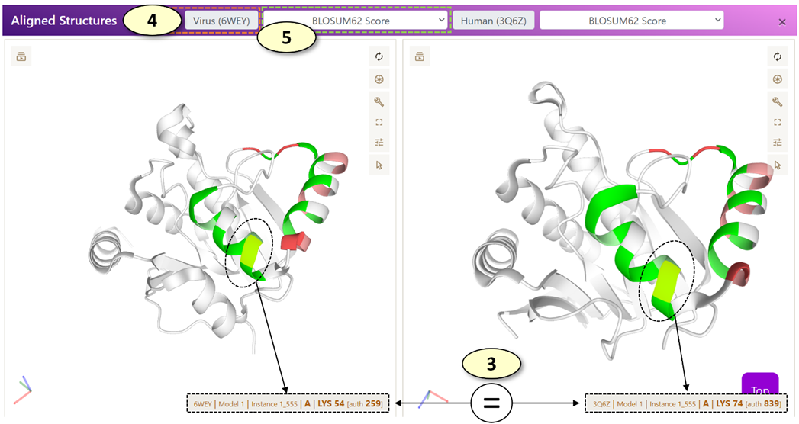

Table of Contents
Additional
tracks of the main graph and the "Vaccine Design" panel
Settings for
the filter panels
The Aligned Sequence and
Structure Panels

1. [Introduction] Open the introduction panel showing the brief description of the web application
2. [Select Dataset] Change the dataset. The datasets include all SARS-CoV-2 protein sequences from the GISAID initiative and the NCBI Virus resource analyzed by the CRESSP pipeline at different time points.
3. [Alignment Mode] Change the alignment mode. In the 'Alignment to Virus' mode, the alignment records are displayed on the reference proteome of SARS-CoV-2. In the 'Alignment to Human' mode, the alignment records are displayed on the individual human protein sequences. For more descriptions, see 8 and 9.
4. [Capture] Capture and save the current view as a PNG image file
5. [Keyboard Shortcuts] Show keyboard shortcuts in a separate window.
6. [Help] Show a brief description of each button with a pop-up message when the mouse pointer is situated on the button.
7. [Main Graph Settings] Show a hidden panel where the settings of the main panel can be changed.
8. [Main Search Box] Tags containing genes and virus names inside the main search box. In the 'Alignment to Virus' mode, tags containing human gene symbols will be colored with the same color the alignment records belonging to the human gene symbol were displayed in the main graph. Clicking or adding a new human gene tag will highlight the alignment records belonging to the human gene. Additionally, a coronavirus species tag 'Severe acute respiratory syndrome coronavirus 2' will be shown since the alignment records will be displayed on the reference proteome of SARS-CoV-2. In the 'Alignment to Human' mode, each coronavirus species tag and the alignment records belonging to each coronavirus species displayed in the main graph will be colored with the same unique color. Clicking or adding a new coronavirus species tag will highlight the alignment records belonging to the coronavirus species. In the 'Alignment to Human' mode, a human gene tag will be not colored with a specific color associated with the human gene symbol, because all the alignment records displayed in the main graph belong to a single human gene symbol and there is no needs to distinguish alignment records based on the human gene symbols they are belonging to. Clicking or adding a human gene tag will display all the alignment records belonging to the human gene symbol on the protein sequence of the human gene.
9. New human gene tags and coronavirus species tags can be added by typing the human gene symbol or coronavirus species in the main search box, which has an autocomplete feature. The number of potentially cross-reactive B-cell (conformational) epitopes and T-cell epitopes (MHC ligands) will be displayed above the search box.
10. A control panel of the main graph. The control panel consists of eight toggle switch buttons with the following properties: the color of the button becomes white when it is not 'pressed' but it becomes light-gray when it is 'pressed'. From left to right, the functions of the buttons are as follows:
1) show/hide legends of the main graph. (hidden by default).
2) enable/disable interaction with the main graph. (enabled by default). The interaction with the main graph is enabled by default. Every object displayed in the main graph can be clicked, which shows detailed information about the object as a table on the retractable panel located on the right side of the main graph. The detailed information can be also visualized by simply hovering a mouse pointer over the object, which will create a pop-up dialog box containing the information. However, especially when the size of the screen is small, this behavior will hinder an efficient exploration and zooming of the main graph. Users can disable the interactions altogether when navigating to the region of interest by clicking this button.
3) [B-cell Cross-Reactivity] show/hide potentially cross-reactive B-cell (conformational) epitopes predicted by the CRESSP pipeline. (shown by default).
4) [T-cell Cross-Reactivity] show/hide potentially cross-reactive T-cell epitopes (MHC-ligands) predicted by the CRESSP pipeline. (shown by default).
5) [Protein Annotations] show/hide protein domain annotations from the UniProt (https://www.uniprot.org/) and InterPro (http://www.ebi.ac.uk/interpro/) databases. (shown by default).
6) [Vaccine Metrics] show/hide summarized immunological properties of reference proteins on which alignment records are displayed. (hidden by default). Visibilities of additional tracks can be modified in the main graph setting graph.
7) [IEDB Epitopes] show/hide experimentally validated immunogenic peptides from IEDB aligned against the reference proteins on which alignment records are displayed. (hidden by default). On hover, the number of positive B-cell reactivity essays and T-cell reactivity essays will be displayed in a pop-up dialog next to the peptides.
8) [Vaccine Candidates] show/hide peptide vaccine candidates aligned against the SARS-CoV-2 representative proteome. (hidden by default). By default, 820 peptide sequences "OptiVax" designed by Liu et. al. (2021, Cell Systems, DOI: 10.1016/j.cels.2020.06.009) will be loaded. Users can align and visualize their list of peptide sequences using the "Vaccine Design Panel".
9) [Vaccine Design Panel] show/hide "Vaccine Design Panel"
11. Start and end coordinates of the current region are displayed in the main graph in the following format: "{protein name} {residue position}/{total number of residues of the protein}".
12. Y-axis labels of the main graph. Two Y-axis labels for the predicted cross-reactive B-cell epitopes and T-cell epitopes are shown. The Y-axis values can be changed separately in the main graph setting panel.
13. The Main Graph.
1) (B-cell cross-reactive epitopes) The predicted cross-reactive B-cell epitopes are represented by a dot with a horizontal line through the center of the dot, with the start and end of the line indicating the start and end positions of the alignment. By default, the size and the transparency of the dot represent the total number of accessible amino acid residues and the correlation coefficient of relative surface accessibility scores for the epitope pair, respectively.
2) (T-cell cross-reactive epitopes) By default, the predicted cross-reactive T-cell epitopes are represented by an overlap of Y-up and Y-down symbols, forming a snowflake-like symbol with six sides, on a horizontal line representing the start and end positions of the alignment. The size of the Y-up and Y-down symbols correlate with the negative log values of the predicted MHC binding affinities (nM) of virus and human peptides, respectively.
14. A table displaying additional information about the clicked object of the main graph.
15. The range slider of the main graph.
16. [Supplementary Graph Settings] The button that will show/hide the supplementary graph settings.
17. Toggle switch buttons that show/hide supplementary graphs.

1. Change the Y-axis of the graph displaying the peptides aligned against the representative SARS-CoV-2 protein sequences (the 'Vaccine Candidate' track). Available values include the number of overlapped predicted cross-reactive B-cell epitopes and T-cell epitopes. (The change takes effect immediately).
2. The maximum value of the Y-axis range of the 'Vaccine Candidate' graph.
3. The remaining buttons for the "Vaccine Design" panel. From left to right, the functions of the buttons are as follows:
1) [Analyze with Current View] Analyze the peptides aligned against the SARS-CoV-2 proteins using the currently selected potentially cross-reactive B-cell and T-cell epitopes displayed in the main graph. For example, if only the potentially cross-reactive epitopes belonging to the PARP14 human protein and correlation coefficient of relative solvent accessibility values > 0.8 are being highlighted in the main graph, only these epitopes will be used to analyze the current set of peptides.
2) [Chose Fasta] Using this tab, users can provide a list of peptides in the FASTA format, which will be aligned against the SARS-CoV-2 representative proteome and displayed on the 'Vaccine Candidate' graph. All analysis will be done locally in the user's web browser, and data will not be uploaded to any remote servers during this process in any form. Users can also load the 820 peptide sequences "OptiVax" designed by Liu et. al. (2021, Cell Systems, DOI: 10.1016/j.cels.2020.06.009) by clicking the "Load OptiVax" button in this tab.
3) [Generate Peptides] Using this tab, users can generate a collection of peptides from the representative SARS-CoV-2 proteome using the sliding window of the given number of amino acids. For example, using the sliding window of 25 amino acids in length, users can generate 9480 peptides. The generated peptide sequences can be either appended to or replace the current list of peptides loaded in the web application.
4) [Select Peptides] The peptides currently loaded in the web application can be filtered ('selected') using this tab. For the current Y-axis values, the peptides with values larger than or smaller than a given threshold can be either included or excluded from the currently selected set of peptides. The peptides can be also included or excluded from the currently selected set of peptides manually one by one by clicking (press 'r' or 'a' key when clicking to remove or include the peptide, respectively) or in bulk using the lasso or box selection tools.
5) [Download Result] Download the current analysis result along with the selection status as a CSV file, which can be opened using various spreadsheet viewers.
4. (The "Vaccine Metrics" Track) Various immunological properties of SARS-CoV-2 representative proteome. Multiple properties are displayed simultaneously in different colors. Currently available immunological properties include the number of mutations (blue), relative solvent accessibility (light gray), the number of experimentally validated T-cell (chartreuse) and B-cell (bright red) epitopes from the IEDB database, MHC-I ligand processing score calculated from MHCflurry (pink), linear B-cell epitope prediction score from BepiPred algorithms (pastel green), and the number of predicted MHC-I (dark red) and MHC-II (dark green) ligands predicted using MHCflurry and netMHCIIpan, respectively. Users can change the visibilities of individual properties in the main graph setting panel.
5. (The "IEDB Epitopes" Track) The experimentally validated B-cell and T-cell epitopes retrieved from the IEDB database aligned against the representative protein sequences. An IEDB epitope is represented by a star symbol on a horizontal line representing the start and end of the alignment. When the number of positive T-cell assays is larger than that of the B-cell assays, the color of the IEDB epitope is set to pink, while it is set to green when the opposite is true. The Y-axis value of an IEDB epitope represents a total number of positive B-cell or T-cell assays available for the IEDB epitope.
6. (The "Vaccine Candidate" Track) The peptide vaccine candidates aligned against the representative proteome of SARS-CoV-2. Each aligned peptide is represented by a blue plus symbol on a line representing the start and end of the alignment. By default, the Y-axis value of a peptide represents a total number of potentially cross-reactive T-cell epitopes (MHC ligands) overlapped with the aligned peptide.
7. The y-axis ticks of the "Vaccine Candidate" track indicate the maximum and minimum values allowed in the graph.

1. Change the height of the main graph (unit: pixels)
2. Change the Y-axis value for potentially cross-reactive B-cell epitopes. Similarly, users can change the metrics for setting the size and the opacity of a point representing a potentially cross-reactive B-cell epitope pair at 3 and 4, respectively. Available value names include the following:
1) <Sum of BLOSUM62 Scores>: The sum of BLOSUM62 alignment scores for the alignment between possible virus and human epitopes.
2) <Sum of Accessibility-Weighted BLOSUM62 Scores>: The sum of relative surface accessibility (RSA) weighted BLOSUM62 alignment scores for the alignment between possible virus and human epitopes. The RSA-weighted BLOSUM62 alignment score at a specific position in an alignment is calculated as follows:
: an RSA-weighted BLOSUM62 alignment score at the position i in the alignment.
: relative surface accessibility of possible virus epitope at the position i in the alignment.
: relative surface accessibility of possible human epitope at the position i in the alignment.
: a BLOSUM62 alignment score at the position i in the alignment.
3) <Sum of Relative Surface Accessible Areas>: The sum of relative surface accessibility (RSA) based weights for an alignment.
4) <Average Accessibility-Weighted BLOSUM62 Score>: <Sum of Accessibility-Weighted BLOSUM62 Scores> divided by the number of amino acids in the alignment
5) <Secondary Structure Similarity>: the proportion of residues in the alignment with an identical secondary structure classification label (SS8).
6) <Correlation Coefficient of Accessibility>: The Pearson correlation coefficient of relative surface accessibility (RSA) values of aligned human and virus protein sequences for an alignment
7) <Correlation Coefficient of Phi (¥Õ)>: The Pearson correlation coefficient of protein backbone angle phi (¥Õ) of aligned human and virus protein sequences for an alignment
8) <Correlation Coefficient of Psi (¥×)>: The Pearson correlation coefficient of protein backbone angle psi (¥×) of aligned human and virus protein sequences for an alignment
9) <Duplicate Counts>: The number of redundant records for each unique epitope pair. Since most SARS-CoV-2 proteomes have identical protein sequences, most of the alignments between human and virus protein sequences are redundant. Therefore, the redundancies of the data were reduced by counting the number of redundant alignments and retrieving only the unique alignments between human and virus protein sequences.
3. Change the name of the value for setting the size of a point representing a potentially cross-reactive B-cell epitope pair.
4. Change the name of the value for setting the opacity of a point representing a potentially cross-reactive B-cell epitope pair.
5. The number of potentially cross-reactive B-cell epitope pairs to plot in the main graph. The potential cross-reactive B-cell epitopes are sorted by a composite score in descending order. (i.e. the potential epitope pairs with higher composite scores are loaded first). Initially, 1000 records are loaded to reduce the overhead.
6. The set the level of redundancy for the cross-reactive B-cell epitope records. The available redundancy levels are the following:
1) <alignments (100%)>: all epitope pairs are retained
2) <non-redundant alignments with unique aligned sequences>: Epitope pairs with identical human and virus epitope sequences were considered redundant.
3) <non-redundant alignments with unique aligned positions>: Every virus protein is aligned against the representative SARS-CoV-2 proteome. Epitope pairs with an identical human epitope sequence and virus epitopes associated with an identical region of the representative virus proteome were considered redundant.
7. Change the window size of potentially cross-reactive B-cell epitope pairs. For each alignment between human and virus sequences, a sliding window of a fixed length was used to generate possible cross-reactive B-cell epitope sequences. The window size is available from 5 to 150 amino acids.
8. Change the representation of potentially cross-reactive B-cell epitope pair in the main graph.
9. Change the visualization format of potentially cross-reactive B-cell epitope pair on the main graph. BITMAP format will render the epitope pairs rapidly. SVG format (vector graph) will take more time to render, but it will create a vector graph, which is scalable (resolution will not drop after a lot of magnification).
10. The number of potentially cross-reactive T-cell epitope (MHC ligand) pairs to plot in the main graph.
11. Change the representation of potentially cross-reactive T-cell epitope (MHC ligand) pair in the main graph. By default, Y-down and Y-up symbols will be used to represent the binding affinity values of human and virus peptides, respectively.
12. Update the main graph according to the settings
13. Change the type (e.g. different geological regions) of mutation count data for the "Vaccine Metrics" track. (The main graph should be updated to apply the change).
14. Change the visibilities of various immunological properties of the SARS-CoV-2 representative proteome using a toggle switch button for each property.
15. Change the minimum MHC allele frequency threshold for the "Vaccine Metrics" track. The lower MHC allele frequency threshold will include more MHC alleles for predicting the number of possible MHC ligands of the SARS-CoV-2 representative proteome. A peptide is classified as a possible ligand of an MHC allele if its predicted binding affinity to the MHC allele is below 250 nM. (The main graph should be updated to apply the change).

1. Users can use filter panels (parallel coordinate plots) to filter potentially cross-reactive B-cell and T-cell epitopes displayed on the main graph. In the parallel coordinate plot, a potential cross-reactive epitope pair is represented as a line traversing the vertical lines. Each vertical line represents an individual metric that can evaluate the significance of predicted potential cross-reactive epitopes. The color of the line corresponds to the color of the cross-reactive epitope pair displayed on the main graph (currently, the tone of the color in the filter plot is a little bit darker than that of the main graph due to different visualization algorithms). Users can create a filter easily by clicking a position on the vertical line and dragging the mouse pointer to the other position on the vertical line. Users can move a filter by clicking the filter in the middle and dragging the filter on the vertical line. The overlapping filters are automatically merged. Lastly, users can remove a filter by clicking the filter. Multiple filters across different metrics can be combined to filter potentially cross-reactive epitopes on the main graph.
2. (B Cell Cross-Reactivity Prediction Metrics): Users can filter potentially cross-reactive B-cell (conformational) epitopes using this parallel coordinate plot. The types of metrics for the plot can be changed in the supplementary graph setting panel.
3. (T Cell Cross-Reactivity Prediction Metrics): Users can filter potentially cross-reactive T-cell epitopes (MHC ligands) using this parallel coordinate plot. The types of metrics for the plot can be changed in the supplementary graph setting panel.
4. (Human Protein Metrics): Users can filter the human genes to which the potentially cross-reactive B-cell and T-cell epitopes belong using this parallel coordinate plot. Users can filter human genes based on the expression of the genes at the tissue level (the GTEx consortium's gene expression data was utilized) or the number of associated experimentally validated autoimmune epitopes (the AAgAtlas and IEDB databases were utilized). The types of metrics for the plot can be changed in the supplementary graph setting panel.

1. Show/hide the supplementary graph settings.
2. Select the metrics that will be displayed in each filter panel. Multiple metrics can be selected at once. Press the control key (Windows) or command key (Mac) when including or excluding a metric from the selection.
3. Update the settings and redraw the corresponding parallel coordinate plot in the filter panel.

1. Select the data tables. The available data tables are the following: "B-cell cross-reactivity prediction", "T-cell cross-reactivity prediction", "MHC alleles".
2. Download the selected data tables as a CSV file, which can be opened in a standard spreadsheet viewer, such as Microsoft Excel.
3. A search box for the data table. For example, users can search a specific human gene name in the search box to closely examine records belonging to that human gene.
4. A data table can be sorted in an ascending/descending order by clicking the column name.

1. Show/hide a single-cell gene expression panel (shown by default). This panel displays gene expression values of various single-cell populations for the human gene associated with the current cross-reactive epitope pair using the single-cell expression datasets available in the COVID-19 Cell Atlas (https://www.covid19cellatlas.org/).
2. Show/hide a tissue-level gene expression panel (shown by default). This panel displays gene expression values of various tissues using the public data generated by the GTEx consortium for the human gene associated with the current cross-reactive epitope pair.
3. The title of the single-cell gene expression panel displays the human gene symbol that is being analyzed.
4. The classification and the name of the single-cell expression dataset being analyzed. The available class labels of the single-cell expression datasets are the following: "Patient Donors", "Lung Cell Line", "Healthy Donors". When the class label is changed, the list of available single-cell expression datasets is updated.
5. Toggle switch buttons for the analysis of single-cell expression data. From the left to right, the detailed descriptions for each toggle switch button are the following:
1) [Cell Type/COVID-19 Status] For single-cell expression datasets belonging to the "Patient Donors", gene expression values of cells from patients with COVID-19 and uninfected healthy donors can be shown separately for comparison by clicking this button.
2) [Expression/Proportion] When the 'Expression' mode is active, a violin plot of gene expression values for each cell cluster will be drawn. When the 'Proportion' mode is active, the proportion of cells positive for the human gene of interest will be shown for each cell cluster. Additionally, the proportion of cells double-positive for the human gene of interest and ACE2, a receptor required for SARS-CoV-2 to infect a human cell, will be shown as well.
3) [All Cells/Only Positive Cells] When 'Only Positive Cells' mode is active, a violin plot will be drawn using the gene expression values excluding cells 'negative' for the gene of interest. (a quotation is used for the word negative because the cells with zero counts might not represent true negative cells. The low mRNA capture rate of single-cell RNA-seq methods limits the detection of lowly expressed genes, which can result in false-negative zero counts).
6. A single-cell gene expression plot, displaying the expression of a human gene of interest in each cell cluster using a violin plot ('Expression' mode) or a stacked vertical bar plot ('Proportion' mode).
7. The title of the tissue-level gene expression panel displays the human gene symbol that is being analyzed.
8. A tissue-level gene expression plot, displaying the expression of a human gene of interest in each tissue type using a box plot.


When a potentially cross-reactive T-cell or B-cell epitope displayed on the main graph is clicked, the aligned sequence panel alone or both the aligned sequence and aligned structure panels are updated, respectively.
l [Aligned Sequence Panel]: The aligned sequence panel visualizes the aligned virus and human epitope sequences using an interactive data table.
n For a potentially cross-reactive T-cell epitope pair, only the amino acid sequence of virus and human peptides and the BLOSUM62 alignment scores are visualized in the data table.
n For a potentially cross-reactive B-cell epitope pair, the amino acid sequence, secondary structure classifications (SS8), relative surface accessibility (RSA) values, protein backbone torsion angles (Phi and Psi), the source of the structural properties (one of experimentally validated, modeled, and de-novo predicted), and the associated experimentally validated protein structures of the human and virus epitopes will be visualized in the data table. If protein structures (either experimentally validated or modeled structures) are not available for the current epitope pair, only the amino acid sequence, predicted RSA and SS8 values will be displayed.
l [Aligned Structure Panel]: The 'Aligned Structure' panel visualizes the aligned virus and human epitopes on the corresponding protein structures. There are two PDB viewers in the panel, one for displaying a protein structure associated with a virus epitope and the other for the human epitope. By default, each residue is colored according to the BLOSUM62 alignment score. For a potentially cross-reactive T-cell epitope pair or the potential B-cell epitopes for which experimentally determined protein structures are not available, no protein structures will be displayed, and only the black screen will be shown in the panel.
1. Users can move each column of the data table in the 'Aligned Sequence' panel. For example, users can re-arrange the columns so that the columns visualizing protein backbone angles (Phi or Psi) of the virus and human epitopes are situated next to each other, enabling a close comparison of the protein backbone angles of the aligned virus and human epitopes.
2. When each row of the data table in the 'Aligned Sequence' panel is clicked, a pair of corresponding residues on the virus and human protein structures are highlighted in the 'Aligned Structure' panel.
3. Also, when each row of the data table in the 'Aligned Sequence' panel is clicked, the position of the corresponding residues in the alignment and the original virus and human protein sequences (0-based coordinates) are displayed in a box below the data table.
4. The PDB ID of the experimentally determined structure associated with a virus or human epitope is shown in the corresponding label. Users can open a PDB website (https://www.rcsb.org/) associated with the PDB ID by clicking the label.
5. Change the annotations of the protein structures. Available options are the following: 'Clear', 'BLOSUM62 Score', 'BLOSUM62 Score with Side Chains'.
1) <Clear>: Remove all annotations from the current protein structure
2) <BLOSUM62 Score>: Annotate each residue of the epitope with the BLOSUM62 alignment score of the residue in the alignment with the other epitope.
3) <BLOSUM62 Score with Side Chains>: Same as <BLOSUM62 Score>, but also displays individual atoms of the residues belonging to the epitope to allow more close examination of the epitope.